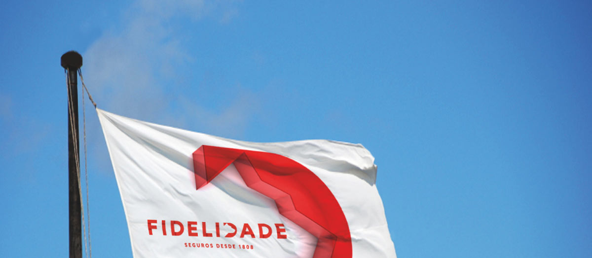
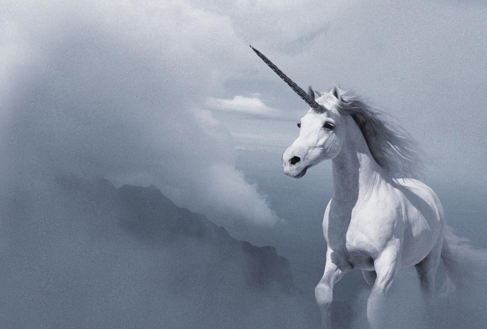
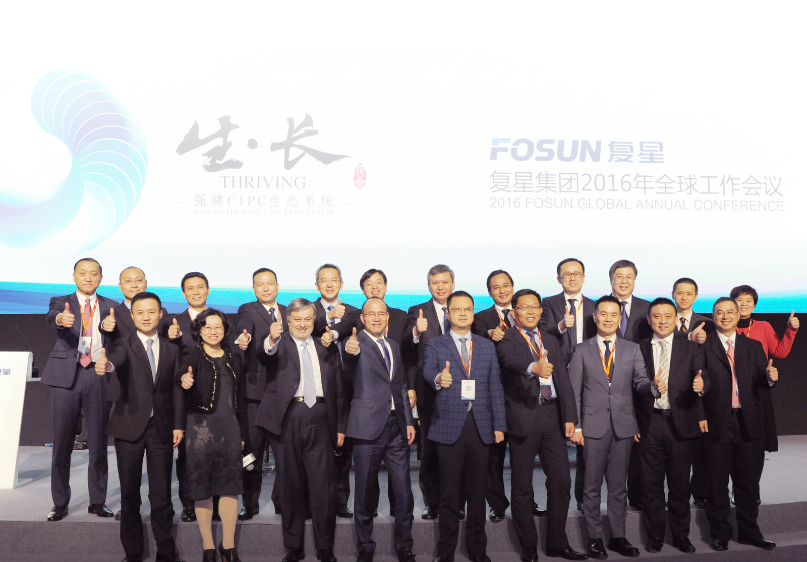

复星坚持扎根中国投资于受益于中国成长动力的全球资源。
复星1992年在上海成立，2007年7月16日，复星国际(00656.HK)在香港联交所主板上市。
复星坚持扎根中国，投资于中国成长根本动力，积极践行其“中国动力嫁接全球资源”的投资模式，矢志向“以保险为核心的综合金融能力”与“植根中国、有全球产业整合能力”双轮驱动的世界一流投资集团大步迈进。
“以保险为核心的综合金融（富足）能力”与“植根中国、有全球产业整合能力”双轮驱动能力不断加强。
复星更加坚定地在投资端聚焦B2F（Business to Family），致力于向家庭客户提供富足、健康和快乐领域的一站式综合解决方案。
中国动力嫁接全球资源：Ahava、Folli Follie、St. John、Caruso、Tom Tailor、Alma Lasers、Studio 8、食之秘、Osborne、Club Med
提升“以保险为核心的综合金融能力”：Fidelidade，Ironshore, MIG等。
匹配保险资金需求，增强投资能力：IDERA， 28 Liberty等。
合资发展中国业务：星堡养老、复星保德信人寿。
目前复星在全球投资超过50个项目，累计超过110亿美元。
在追求经济发展的同时，复星也不忘与员工、社区、合作伙伴分享自身的发展，积极回馈社会，做一个负责任的全球公民。同时，复星一直积极投身中国商业生态和自然生态的改善，支持中国经济和中华文化的复兴。
轻资产战略与“独角兽”战略
推进集团层面轻资产，同时更好地享受保险板块带来的自然高杠杆率，从而提高整体资产的回报率。严格界定集团、保险平台、控股上市公司平台以及基金平台的投资出资规则。
未来在财富、健康、快乐和创新制造等行业中，通过推动传统产业主动嫁接移动互联网及人工智能，打通客户与制造，建立C2M智慧经济新模式。通过成熟的产品或模式聚集闲散的、低价的资源，也同样可以打造出一批极具竞争力的独角兽企业。
复星要求每一位合伙人始终处于一种企业家状态，不断地想去创新、创造，不断地学习，不断地思考新的商业模式，而且要有精力、有能力去实现。
深度融入移动互联网受益于全球行业变革
传统行业全面基于移动互联网、大数据、云计算等现代信息技术，从而形成一种小而精的前台和精而专的统一后台的新型企业组织，从而进化出更高效率的“智慧经济体”商业模式，从而成为腾飞的“独角兽”。
复星集团官网：http://www.fosun.com